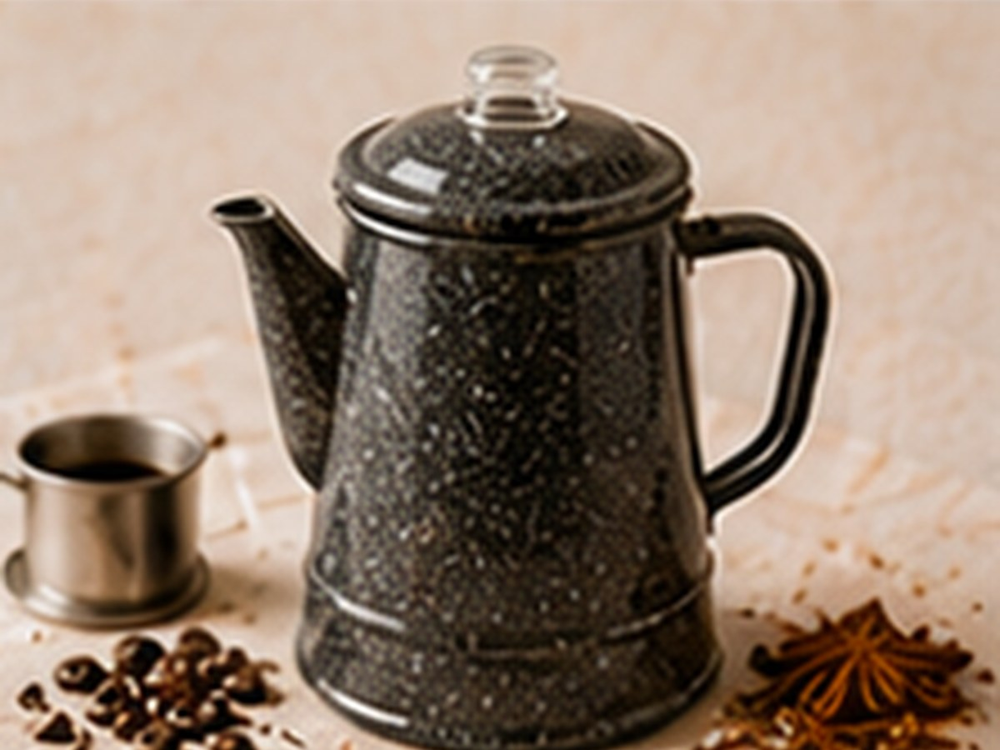

✨ KI-generiertes Bild Filterkaffee-KlassikerFilterkaffee-Klassiker
Percolator Lagerfeuer
Rustikal und bodenständig.
⏱12 Min.
📶Einfach
☕4 Portionen
🫘Zutaten
- Kaffee, grob gemahlen45 g
- Wasser600 ml
📋Zubereitung
- 1Wasser in den Percolator füllen.
- 2Kaffee in den Siebeinsatz geben.
- 38–10 Minuten bei mittlerer Hitze köcheln lassen.
💡
Kaffee für dieses Rezept entdeckenLeNoKo Shop
→
Kaffee-Tipp
unseren Peru Signature hält dem Köcheln stand und bleibt genießbar.